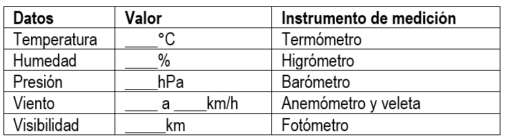

Proyecto N° 1: Estación meteorológica
I. Presentación:
En la actualidad, estamos viviendo cambios constantes en el clima y en muchas de sus principales variables, como la temperatura y la humedad. La observación directa de estos fenómenos atmosféricos y su registro es una tarea realizada por profesionales llamados meteorólogos.
Desafío: Construir un prototipo de estación meteorológica que permita emitir diferentes alertas frente a temperaturas altas, detección de gases y radiación solar.
II. Investigación:
- ¿Qué es la meteorología?
- ¿Qué es una estación meteorológica?
- Dibujar o Pegar una imagen de los instrumentos o partes de una estación meteorológica
- ¿Qué es un meteorólogo?
- Explorar la página del Servicio Meteorológico Nacional https://www.smn.gob.ar y completar la tabla con los datos del pronóstico: 
- Ingresar a la sección Nosotros > El Organismo y registrar su misión.
- Entrar a la sección Nosotros > Red de observaciones, leer el artículo y responder:
- ¿Cuántas estaciones meteorológicas hay en Argentina y qué organismo las regula?
- ¿Qué importancia tiene la Estación de Vigilancia Atmosférica Global (VAG) en Ushuaia?
- ¿Cuántas estaciones sinópticas de superficie tiene el SMN en las bases antárticas y qué las hace reconocidas internacionalmente?
- Pegar una imagen de alguna de estas estaciones, indicar cuándo fue fundada y su ubicación geográfica (mapa).
III. Planificación:
- Dibujar y completar la tabla de roles. Recordar las responsabilidades que debe cumplir cada integrante del equipo.
- ¿Qué componentes utilizarán y a qué puertos los deben conectar?
- Dibujar un boceto de la maqueta.

IV. Crear:
- Construir la maqueta siguiendo la guía de armado (5.5 Estación meteorológica).
- Escribir el algoritmo del programa.
V. Reflexionar y Compartir:
- Explicar el funcionamiento del modelo.
- ¿Qué dificultades encontraron y cómo las solucionaron?
- ¿Qué mejoras le agregarían?
- ¿Cómo calificas el desempeño del equipo?